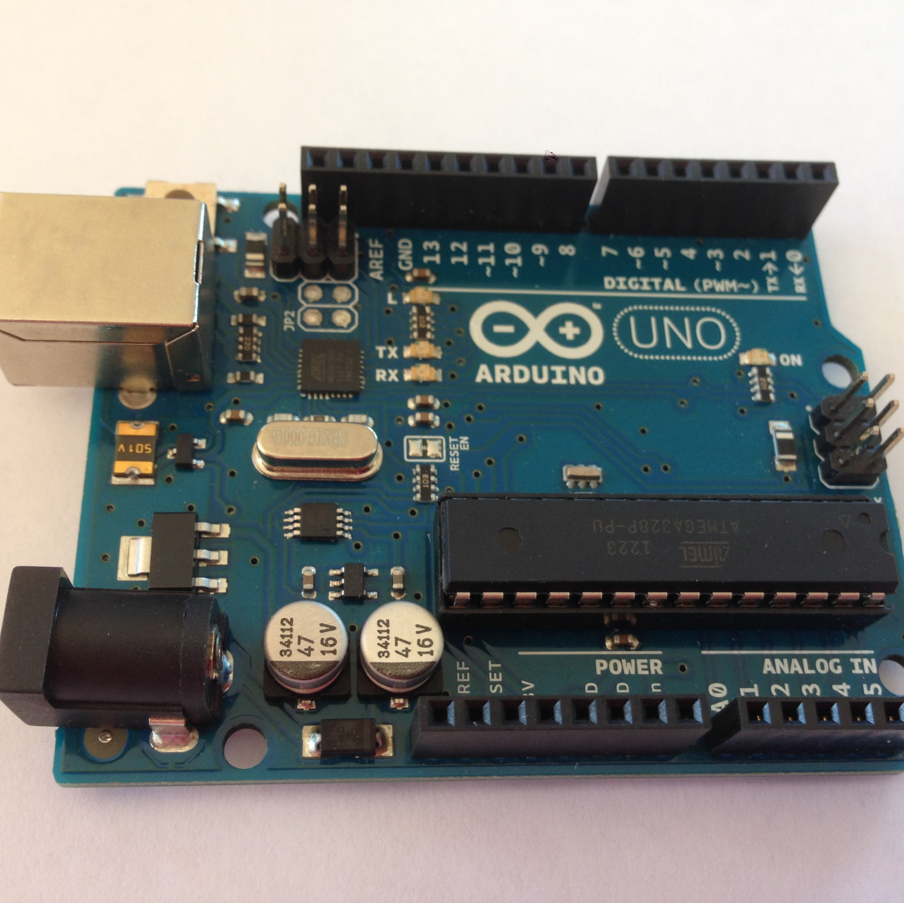
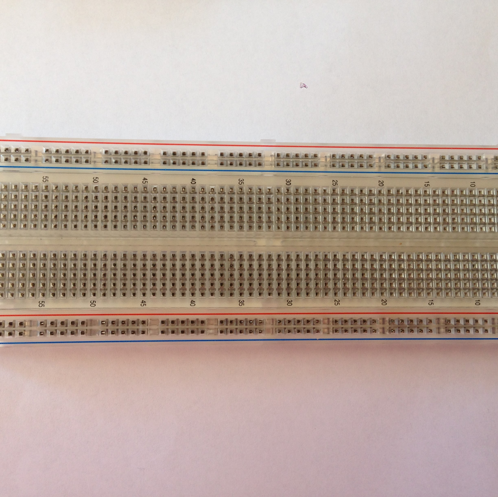
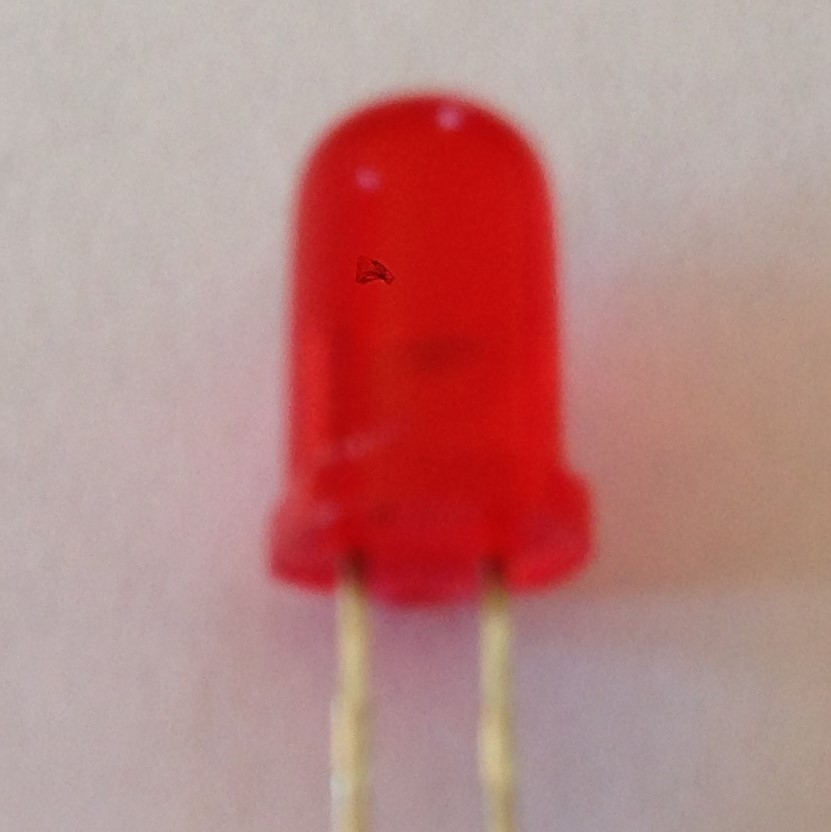
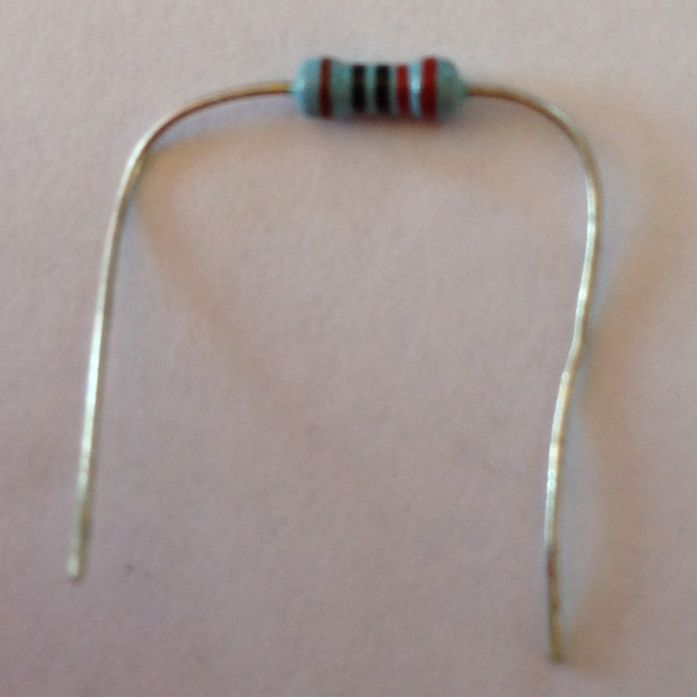
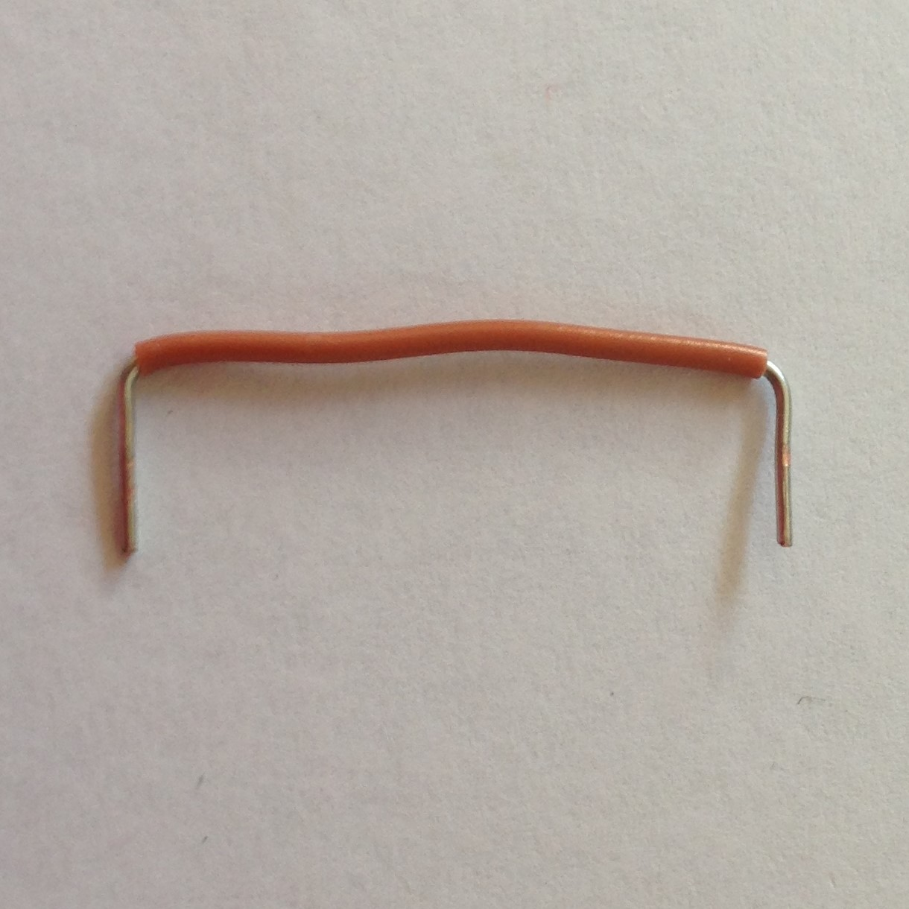

- 1x Arduino 
- 1x breadboard 
- 1x LED 
- 1x 22Ohm resistor 
- 2x wire 
Step 1
Connect one wire to "GND", and one to any of the numbers 1-13,
for this tutorial we will be using '7'
Step 1
Wire up the 220Ohm resistor and LED as shown in the diagram
Well done! You have completed the circut, lets start coding!
The code to make the LED flash is shown below, we will go through it line by line

-
void setup() {
"void" basically means "nothing",
so in this case we can ignore it.
"setup()" is the name of this block of code that runs when the program is started, to set everything up.
The curly brackets go around the block of code. -
// put your setup code here, to run once:
The "//" just means that everything after it on that line is a comment.
It does nothing except tell the reader of the code something,
This is very usefull, it can help you and others read and understand your code. -
pinMode(7, OUTPUT);
This sets pin 7's mode to OUTPUT,
output means it will give the circut power
Note how the last two lines are "indented", or moved forward 4 spaces, this shows that they are a part of "setup".
You will also notice that the line ends with a semicolon, this shows that the line has ended. -
}
Ends setup.
-
void loop() {
This contains the "loop" part of the code, it repeats till the Arduino is turned off or you tell it to.
Note how this is very similar to "void setup() {}". -
digitalWrite(7, HIGH);
"digitalWrite" lets you change the power of a certain pin, in this case pin 7.
You can use "HIGH" or "LOW" to turn the power on or off, which then switches the LED on and off.
Note that this line is also indented because it belongs to the loop(). -
delay(1000);
"delay" pauses the program for the number of milliseconds specified in the brackets, In this case 1000
One millisecond is 1/1000 of a second, so 1000 milliseconds is one second. Note that this line is also indented because it belongs to the loop(). -
digitalWrite(7, LOW);
Turns off the LED, explained ubove.
-
}
End of the loop, when it reaches this is goes back to
void loop() {
, then moves down, line by line till it reaches this statement again, and repeats. The only way this cycle can be broken is through a return statement which we will cover later.